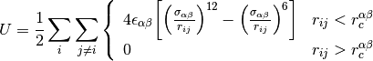

mapp.md.atoms.ff_lj¶
-
atoms.ff_lj(eps, sigma, r_c, shift=False)¶ Lennard-Jones potential
see Notes section below
Parameters: eps : symmetric double[nelems][nelems]

sigma : symmetric double[nelems][nelems]

r_c : symmetric double[nelems][nelems]

shift : bool
shift the tail if set to True
Returns: None
Notes
This is the famous Lennard Jones potential

Examples
Kob-Anderson potential
>>> from mapp import md >>> sim=md.cfg("configs/KA.cfg") >>> sim.ff_lj(sigma=[[1.0],[0.8,0.88]],eps=[[1.0],[1.5,0.5]],r_c=[[2.5],[2.0,2.2]],shift=False)